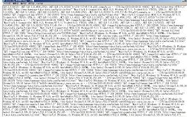

アクセス解析の設置方法
ホームページにアクセス解析を設置しておくと、訪問者のさまざまな情報を調べることができます。有料ツールの方が詳細なデータを把握できますが、無料のアクセス解析でも詳しくデータを調べることができます。
例えば、アクセス元の地域、ブラウザやＯＳの種類、画面の解像度、再訪問期間、閲覧経路、滞在時間、クリックされた内部リンクなど、訪問者の個人情報を除く、さまざまなデータを解析することができます。
このアクセス解析にはサーバーのアクセスログを解析する方法もありますが、一般的には「Googleアナリティクス」などのJavaScriptのタグをサイトに貼る方法がよく利用されています。
①一般的なアクセス解析（※JavaScriptタグをサイトに設置）→ 「訪問者のみ」が対象
②アクセスログでの解析（※サーバーで生ログを保存）→ 「訪問者＋クローラーロボット」が対象
JavaScriptタイプのアクセス解析の場合は、サイトのページ内に解析用の計測タグを貼り付ける必要があります。一方、サーバーのアクセスログで解析する場合、タグの設置は必要ないものの、管理画面でログを保存するなどの設定をしておく必要があります。
いずれの場合も設定してからデータの収集が開始されますので、ホームページの開設と同時に設置しておくとよいでしょう。
JavaScriptタイプとサーバーアクセスログには、それぞれメリット、デメリットがあるため、できるだけ両方とも設置しておくことをおすすめします。
無料で利用できるアクセス解析ツール
JavaScriptタイプのアクセス解析は有料のものが高機能ではありますが、無料で利用できるものもかなり高機能です。「Googleアナリティクス」や「ヤフーのアクセス解析」、あるいはFC2などの無料ツールの人気が高いです。
- Googleアナリティクスの設定方法
- fc2アクセス解析
- 忍者アクセス解析
- ヤフーアクセス解析（※終了）
当ホームページではグーグルアナリティクスを使用していますが、広告が表示されないのが魅力です。
実際にアクセス数のある検索キーワードを調べてみて、検索回数のボリューム数があるようなら、そのコンテンツを強化することでさらなるアクセスアップを目指すことができます。
このJavaScriptタイプのアクセス解析は、取得したタグを自分のホームページに貼り付け、ブラウザがページを読み込む際に計測するものです。そのため、アクセス解析を設置しない場合と比べるとページの表示速度は若干は重くなるかもしれません。
以前まではページの先頭部分にJavaScriptを貼りつけるとスクリプトが読み込まれるまでサイトが表示されず、重くなってしまうため、HTMLソースの最後に置くのが一般的でした。
けれども、現在のGoogleアナリティクスのコードは「非同期」でサイトの表示を妨げずに読み込まれるため、最初の </head>内に記述しても問題ありません。
ただし、アナリティクス以外のアクセス解析は非同期での読み込みには対応していないケースも多いため、最後の</body>タグ直前に貼り付けておくことをおすすめします。
また、現在はプライバシー保護の観点からHTTPSでの検索がデフォルトになったため、上記の「検索キーワード」が表示されなくなり、（not provided）と表示されるケースが多くなってきています。
サーバーのアクセスログを利用しての解析方法
使用しているレンタルサーバーによっては、アクセスログ（生ログ）のデータを保存できるところもあり、そちらを利用して解析することもできます。
→ アクセスログでのアクセス解析の方法
このアクセスログを利用する場合、自動的に保存してくれるレンタルサーバーもありますが、たいていはあらかじめログの保存設定をしておく必要があります。サーバーを契約した際、とりあえずは保存するように設定しておくとよいでしょう。
この生ログは人間によるアクセスのほか、クローラーのアクセスやエラーなども解析できるため、不審なアクセスに対処する際には必要です。
例えば、当サイトではWordPressを利用してはおりませんが、毎月、WordPressログイン画面への不正侵入と思われるクローラーのアクセスを確認しています。
もし、実際にWordPressを利用していた場合、このようなアクセスを確認できれば、パスワードの変更や海外からのアクセスを制限するなど何等かの対処をすることができます。
■アクセスログ解析にはツールが必要
このログ自体は単にアクセスの履歴が記録されているテキストデータの集まりにすぎないので、これらを集計して統計をとるには何らかの解析ツールが必要になります。

実際に解析する方法としては、アクセスログをダウンロードして「ApacheLogViewer」などのツールを使い、パソコン上で解析する方法があります。あるいは、レンタルサーバーによってはウェブ上で閲覧できる「Awstats」や「Analyzer」などのツールを利用できるケースも多いです。
例えば、当サイトの場合はシックスコアのレンタルサーバーを使用しておりますが、このようなサーバーサイドのアクセス解析ツールを利用することができます。
このサーバーのアクセスログを利用する場合、JavaScriptなどのタグをホームページに貼りつける必要がないため、サイトの表示が重くなることはありませんが、詳細なデータを解析するには少し物足りなさがあるかもしれません。
例えば、よく訪問するページなどはブラウザ側のキャッシュでページが閲覧されるため、サーバー側へはファイルの取得がリクエストされず、アクセスログには記録されないため、この分のページビューが除外されてしまいます。
アクセスログでは正確なデータの把握には差が出てしまうこともありますので、できるだけグーグルアナリティクスなどの一般的なアクセス解析も併用することをおすすめします。
解析データを使ってのアクセスアップへのつなげ方
これらの解析データを実際のアクセスアップへつなげる際、メインキーワードよりも意図していなかった検索キーワードに着目する方が効果が高いです。
たいてい、メインキーワードへのSEO対策はすでにしているはずですので、基本的にそのキーワードで大幅にアクセスが増えるということはあまりないです。
一方、まったく想定していなかったようなキーワードで実際のアクセスがある場合、そのキーワードに関連するページや特集ページを作成したり、そのページへの内部リンクを増やすことによって検索順位が上昇し、さらにアクセス数が増大する可能性があります。
特に、意図していなかったキーワードの月間の検索回数が多い場合には、大幅なアクセスアップにつながる可能性もあります。あるいは検索回数が少なくても、広告単価の高いキーワードについては広告収入のアップも期待できます。
例えば、当サイトの「ホームページの作り方」というのは、お金にはならないまったくのボランティアサイトのため、広告収入は特に期待してはおりませんでした。少しでも訪問者さまのお役に立てればそれでよいというキモチで開設した次第です。
けれども、運営していくにつれ、これはあまり書きたくはないのですが、「法人向けレンタルサーバー」などのような、高い広告収入を期待できるアクセスが発生してきたりもしております。
そのようなキーワードは、実際にアクセス解析をしてはじめてわかるものですので、アクセス解析の設置ははやめにしておくとよいでしょう。